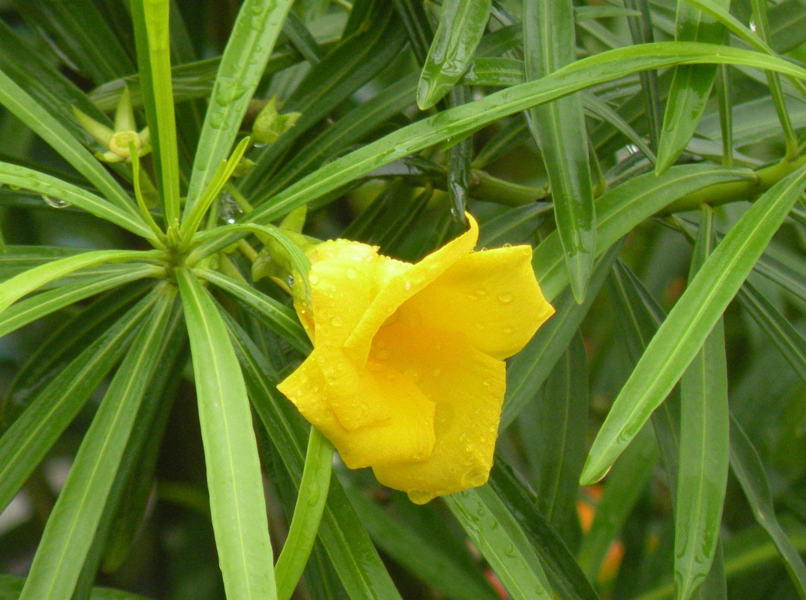

Cascabela Thevetia (also known as Thevetia peruviana) is a toxic plant native to Mexico and Central America, commonly grown as an ornamental species.
Jatropha Integerrima, often referred to as peregrina or spicy jatropha, is a flowering plant in the spurge family, originally from Cuba and Hispaniola.
Tabernaemontana Divaricata, also known as the pinwheel flower, crape jasmine, East India rosebay, or Nero's crown, is an evergreen shrub or small tree native to South Asia, Southeast Asia, and China.

The Pomegranate (Punica granatum) is a deciduous, fruit-bearing shrub from the Lythraceae family, subfamily Punicoideae. It holds significant symbolic and mythological meanings in various cultures.